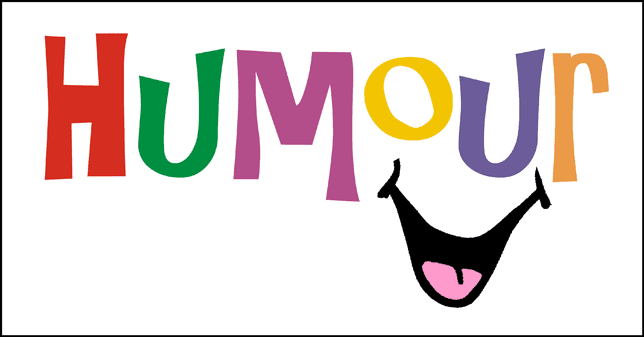

Laughter
Humor is often described as the universal language that can bridge gaps, ease tensions, and foster connections. In Noah’s journey throughout the book Born a Crime, humor emerges as a powerful tool that not only defines his character but also shapes his relationships. From making friends to navigating the complexities of life, Noah’s comedic approach allows him to turn challenges into opportunities for laughter. This article explores how Noah’s use of humor profoundly impacts his life experiences, showcasing the importance of laughter in forging connections and overcoming adversity.
Instances of Humor
One of the most memorable instances of humor in Noah’s life occurs during his first day at a new school. Feeling out of place and anxious, he cracks a joke about his mismatched socks, instantly breaking the ice with his classmates. This moment not only highlights his quick wit but also sets the tone for his ability to connect with others through laughter. Additionally, when faced with a particularly challenging situation at home, Noah uses humor to lighten the mood, turning a potential conflict into a shared laugh with his family. For example, he recalls a time when he made a joke about his mother’s cooking, which not only diffused the tension but also brought them closer together.
Impact of Humor
Humor plays a crucial role in Noah’s ability to form friendships. By using jokes and light-hearted banter, he creates an inviting atmosphere that encourages others to engage with him. His playful teasing of friends fosters camaraderie and strengthens their bond. For instance, when he uses humor to poke fun at his own cultural background, he invites others to share their own stories, creating a sense of belonging. Moreover, humor serves as a coping mechanism during difficult times. When faced with adversity, Noah’s ability to find humor in the situation allows him to maintain a positive outlook and connect with those around him, transforming challenges into shared experiences.
Textual Evidence
Throughout the book, Noah employs clever wordplay and witty observations that resonate with readers. One particularly funny line, “I may not have the best dance moves, but at least I can make you laugh while I trip over my own feet,” encapsulates his self-deprecating humor and ability to find joy in imperfection. Such phrases not only entertain but also illustrate how humor serves as a shield against life’s difficulties. In another instance, he describes his experiences in a humorous light, saying, “I learned that if you can make people laugh, they will forgive you for being different.” This insight reveals how humor helps him navigate the complexities of identity and acceptance.
Personal Reflection

Reflecting on my own experiences, I can relate to Noah’s use of humor as a means of connection. I remember a time when I was the new kid in school, feeling anxious and alone. By cracking a few jokes about my awkwardness, I was able to break down barriers and make new friends. Similarly, humor has helped me navigate challenging situations, reminding me that laughter can be a powerful antidote to stress and anxiety. Whether it’s sharing a laugh with friends during tough times or using humor to lighten the mood at home, I’ve found that laughter truly is a universal connector.
Conclusion
In conclusion, Noah’s use of humor throughout his life illustrates its profound impact on relationships and personal resilience. By embracing laughter, he not only connects with others but also transforms challenges into opportunities for joy. As we navigate our own lives, we can take a page from Noah’s book, recognizing that humor is not just a coping mechanism but a vital part of the human experience. In a world that can often feel overwhelming, laughter remains a powerful tool that can help us forge connections, overcome adversity, and celebrate the beauty of life. Feel free to make any adjustments or additions to better reflect your style or insights. Once you're satisfied with the article, remember to proofread it for clarity and coherence before submitting it. If you need further help or specific changes, just let me know.